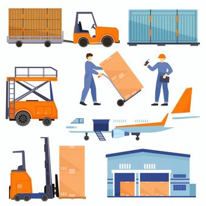
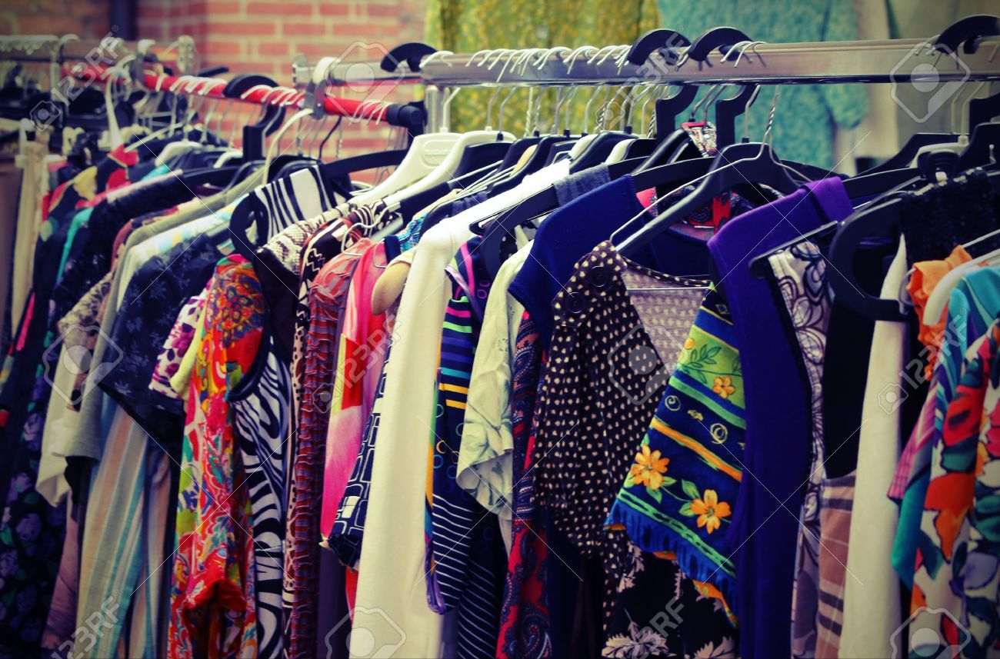

経歴の詳細
桃山学院大学
大阪の和泉市にある桃山学院大学で学生時代を過ごしました。
自分たちの代でフットサルサークルを作り、月に２〜３回くらいフットサルをしていました。
後輩が誰一人入らず、卒業と共にサークルは無くなりましたが、サークル仲間とは未だに遊んでいます。

株式会社ヒガシトゥエンティワン
社会人の一年目は株式会社ヒガシトゥエンティワンという物流会社に就職しました。
総合職として入社した後に、大阪の堺市にある営業所でトラック・倉庫の管理や営業を行っていました。
運転が好きという理由だけで物流会社に入ろうと決め、３年半ほど働いていました。
営業や倉庫管理、経理など様々なことを経験できました。
個人事業主
株式会社ヒガシトゥエンティワンを退職した後、自分の力だけでお金を稼ぎたいと考えたため、個人事業主になることを決意しました。
最初の１年間は経験も知識も何もない状態で努力しても結果が出ずに、みるみる貯金も減っていましたが、1年経ってようやく生活できるレベルになりました。
中国輸入や古着販売、Youtubeでの広告収益など色々やってきましたが、古着販売をメインでやっていました。


プログラマー
個人事業主として活動していく中で、これまでのキャリアを振り返った時にもう一度組織に入って社会人として社会に貢献したいと思い転職を決めました。
パソコンで仕事をすることに興味があったのと、今まで物流や古着販売などそこにある「もの」を扱うことが多かったので、そこに何もない「ゼロ」からサービスを作りたいと思ったのでプログラマーを目指しシードテック株式会社に就職しました。